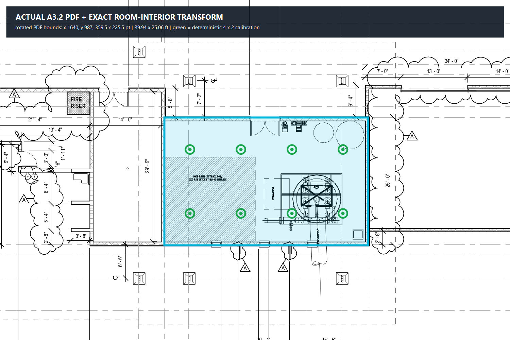
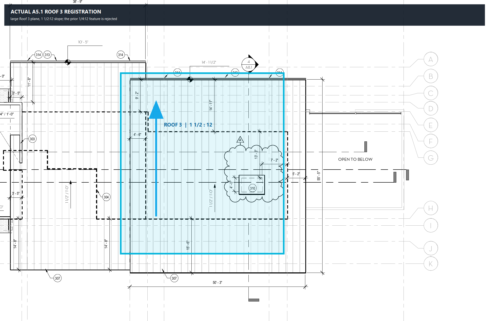
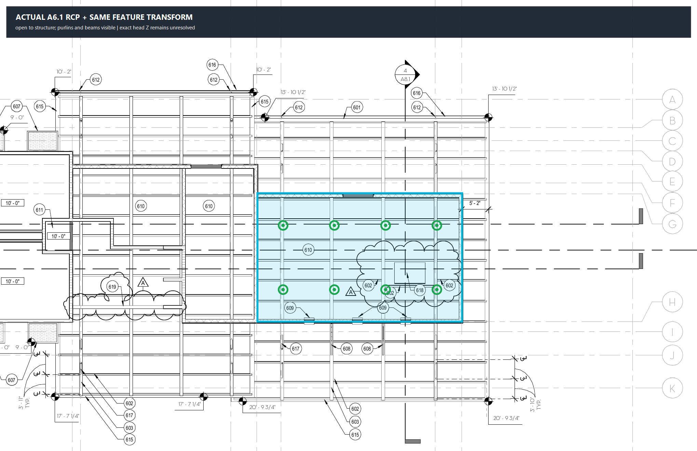
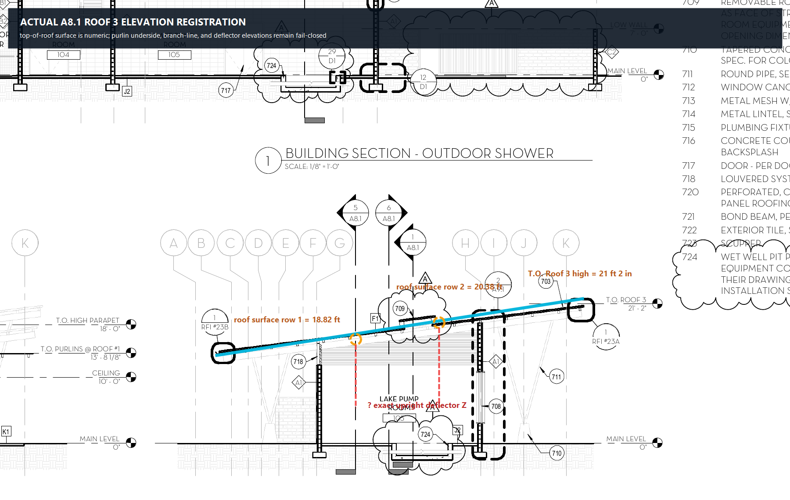
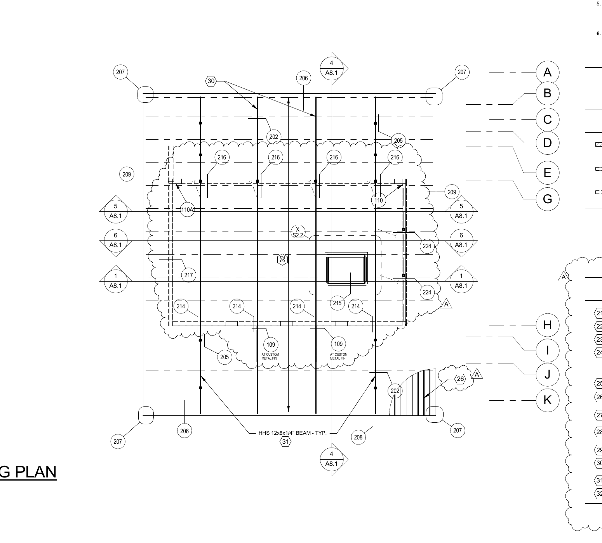
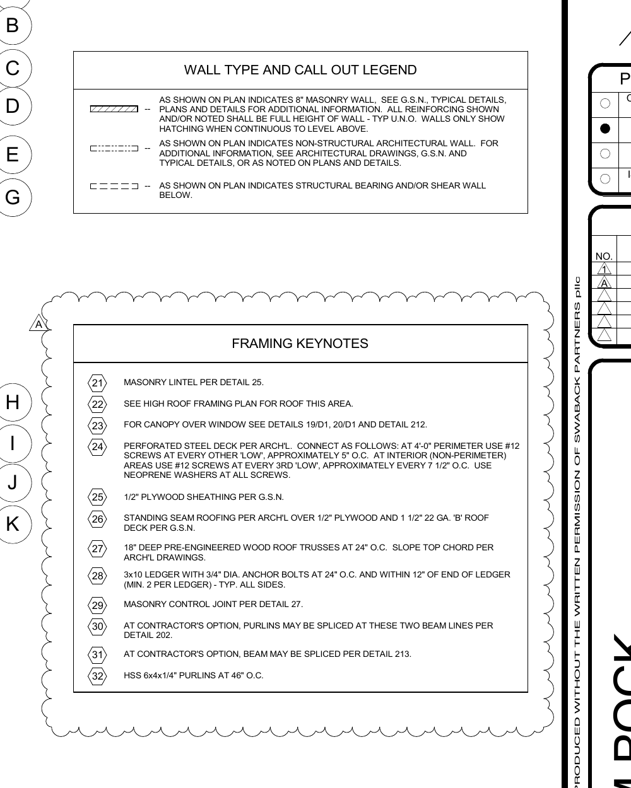
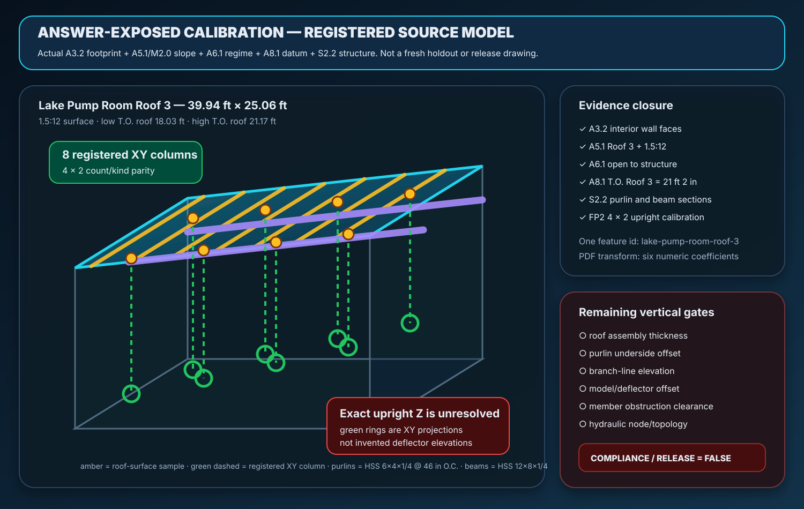

39.94′registered interior width
25.06′registered interior depth
1.5:12actual Roof 3 slope
8 / 8count and kind parity
4 × 2registered XY pattern
Z pendingno invented elevation








One-feature registration path
A3.2interior wall faces + six-coefficient PDF transform
A5.1 / M2.0Roof 3 identity + 1½:12 slope
A6.1open-to-structure ceiling regime
A8.1Roof 3 high datum + elevation direction
S2.2purlin and beam sections/depths
Still fail-closed
Roof-assembly thickness, exact purlin underside, branch-line elevation, deflector offset, member obstruction clearance, hydraulic topology, compliance, fabrication, and field release remain false. This calibration must transfer unchanged to another untouched project before fresh-project placement can pass.
freshProjectPlacementVerified=false · exactHeadElevationReady=false · obstructionClearanceReady=false · complianceReady=false · fieldReleaseReady=false